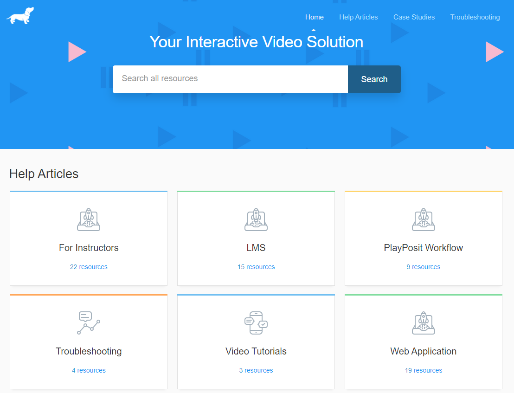

For Playposit gjelder det samme som for EdPuzzle. Det er mulig å lage interaktive videoer, med info, quiz eller åpne spørsmål. For å lære mer om PlayPosit kan du gå til en veiledningsside, klikk her.
Etter min første omgang fant jeg ut at PlayPosit har like mange muligheter enn EddPuzzle, se på video nedenfor (til venstre). Ikke alle videoer i veiledningsside virker. Når du vil se på en video, kommer det opp en feilmelding: "Sorry: Because of its privacy settings, this video cannot be played here". Og til nå fant jeg ikke ut hvorfor.
Video til venstre viser hvordan en kan lage en interaktiv video ved PlayPosit. Før du begynner bør du lage en konto for PlayPosit. Video til høyre er innebygd resultat fra video til venstre. Er du med?
Tilbake til side om interaktive videoer